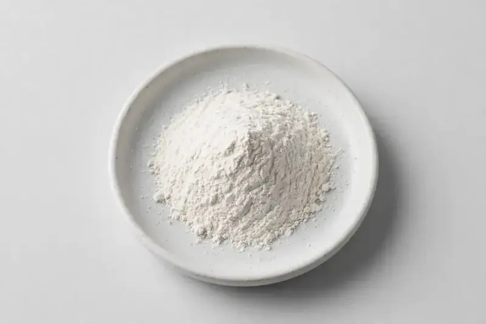

Sodium hyaluronate — fermentation-derived hyaluronic acid powder available in cosmetic and food/nutraceutical grades for beauty-from-within and topical formulations.

Overview
Sodium hyaluronate is the salt form of hyaluronic acid, produced commercially by microbial fermentation and standardized by molecular weight range and assay. Demand keeps climbing across beauty-from-within capsules, functional beverages and topical cosmetic bases. As a Xi'an-based trading company, we source through vetted partner producers, so buyers share their target molecular weight, grade and assay and we confirm feasibility honestly before quoting.
Specifications below reflect commonly requested options in the market — not a stock list. Share your target spec and we'll confirm exactly what we can supply, honestly.
| Specification | Details |
|---|---|
| Botanical identity | Fermentation-derived sodium hyaluronate powder |
| Marker compound | Sodium hyaluronate — commonly requested: cosmetic grade and food/nutraceutical grade, multiple molecular weight ranges |
| Appearance | White to off-white fine powder |
| Analytical methods | Methods referenced in buyer specifications: HPLC |
| Mesh size | Typically 80–100 mesh (confirm per inquiry) |
| Testing | COA/TDS arranged on request; scope agreed per your spec |
Applications
Documentation
We don't claim in-house labs or certifications we don't hold. COA and TDS documents can be arranged on request, and testing scope is agreed against your specification before supply.
Buying guide
Sodium hyaluronate is sold into two main application tracks, cosmetic and food grade, and the grade you buy should be matched to where the material will actually go. Confirm on the COA which grade is being offered and what the accompanying documentation covers, because a cosmetic-grade lot may not carry the same testing package a food or nutraceutical buyer needs. Fermentation-derived material is the norm, and you should be able to see the route stated clearly rather than inferred.
Beyond grade, the specification that most affects your formulation is molecular weight, and suppliers typically quote a range rather than a single figure. Ask how the range is determined and whether it is measured on the incoming material or on the finished lot. Because sodium hyaluronate is hygroscopic, appearance and flow can shift with moisture uptake, so a white to off-white fine powder that has clumped in the bag is a handling flag rather than a spec failure on its own.
Storage follows directly from that hygroscopicity. Keep containers closed, dry, and at moderate temperature, and open only what you can use or reseal properly. When you first qualify a supplier, request a small sample so you can test dissolution behaviour in your own system before committing to a bulk format.
FAQ
Related products
Theobroma cacao
Key marker: Theobromine 10-20%
View specs →Codonopsis pilosula
Key marker: 10:1 or polysaccharides
View specs →Rehmannia glutinosa
Key marker: 10:1 or catalpol
View specs →Hydrolyzed collagen (bovine/marine)
Key marker: Type I & III, bovine/marine
View specs →Huperzine A (Huperzia serrata)
Key marker: 1% / 98%+ grades
View specs →Buyer guides
Buyer’s guide
Identity, actives, heavy metals, micro — what each section of a Certificate of Analysis means, and the red flags that tell you to walk away.
Read the guide →Buyer’s guide
Section-by-section COA walkthrough — marker assays, heavy metals, micro panels, red flags, and a buyer checklist.
Read the guide →Send your target spec and volumes — we'll respond with a tailored quotation.
Request a Quote